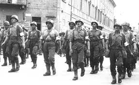
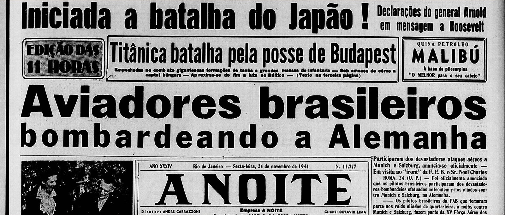
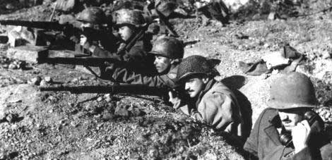

As consequências da Segunda Guerra Mundial
Após um longo período de combate entre Eixo e Aliança, a Segunda Guerra chegou ao fim apenas no ano de 1945 quando Itália e Alemanha se renderam. O Japão, último país a assinar o tratado de rendição sofreu um ataque nuclear lançado pelos Estados Unidos onde uma bomba atômica explodiu na cidade de Hiroshima dizimando um grande número de cidadãos japoneses inocentes.
O regime nazista foi responsável pela morte de cerca de 2 milhões de poloneses, 4 milhões de pessoas com problemas de saúde (deficientes físicos e mentais) e um número exorbitante de 6 milhões de judeus no massacre que ficou conhecido como Holocausto. Os danos materiais também foram muitos, a guerra arrasou as nações perdedoras e outras envolvidas destruindo cidades inteiras e a vida de milhares de cidadãos. O pagamento de uma indenização para reconstrução das nações derrotadas foi determinado pelos Aliados assim como uma indenização aos países vitoriosos, assinada no Tratado de Paz de Paris.
A maior e pior consequência da Segunda Guerra foi, sem dúvida, os milhares de soldados e civis mortos durante o conflito. Somente entre judeus foram aproximadamente 6 milhões de perdas, principalmente, em campos de concentração nazistas. Mas não foram somente judeus os que sofreram com os campos de concentração, milhares de poloneses, ciganos, homossexuais, eslavos entre outros tiveram o mesmo fim.
Países |
Militares |
Civis |
Total |
URSS |
10,7 milhões |
11,4 milhões |
22,1 milhões |
Alemanha |
5,5 milhões |
1,8 milhões |
7,3 milhões |
França |
212 mil |
350 mil |
562 mil |
Itália |
301 mil |
153 mil |
454 mil |
Inglaterra |
382 mil |
68 mil |
450 mil |
EUA |
416 mil |
1.700 |
417,7 mil |
No mundo |
25 milhões |
41,6 milhões |
66,6 milhões |
Apesar das enormes perdas, muitos países se beneficiaram com a Segunda Guerra. O Canadá se tornou um grande fornecedor de aviões e navios. A guerra ajudou o país a ter diversas indústrias de metais pesados. Os EUA também tiveram um grande crescimento de seu parque industrial. Após a guerra, foram realizadas diversas conferências a fim de decidir a divisão territorial e os rumos da Alemanha no pós-guerra.
A Alemanha foi multada e boa parte da indenização seria destinada para a União Soviética. Vários líderes nazistas foram condenados e a indústria bélica foi proibida de produzir. Enquanto os soviéticos tomavam conta da região oriental da Europa, os Estados Unidos influenciavam a parte ocidental do continente. Eram os prenúncios para a Guerra Fria.
Com o fim da guerra, o mundo passou a utilizar a definição de superpotência e os Estados Unidos comandavam o bloco econômico capitalista e a União Soviética, estava à frente do bloco socialista. Além disso, ocorreu na Europa uma grande crise. Os países haviam perdido não só a guerra como também seu caráter econômico, político e cultural.
Inglaterra e França, assim como outras nações europeias, saíram da guerra em grave crise social, política e econômica. Também tiveram de iniciar um doloroso processo de reconstrução infraestrutural do país, afinal, boa parte das fábricas e usinas de abastecimento estavam em ruínas ou completamente destruídas. Já a União Soviética, maior potência comunista do planeta, saiu do conflito bastante fortalecida, passando a disputar com os Estados Unidos a liderança mundial.
Surgiu a ONU - Organização das Nações Unidas em 1945. É uma organização mundial que reuniu países com o intuito de assinar a Carta das Nações Unidas. Essa carta dava poderes de mediação à organização de modo a intervir em possíveis conflitos para evitar as consequências da Segunda Guerra Mundial. Além disso, sua função também era de manter a paz mundial.

O Brasil na Segunda Guerra Mundial
O Brasil começou a participar da Segunda Guerra Mundial em agosto de 1942, durante a presidência de Getúlio Vargas. Primeiramente, o país permaneceu neutro e quando os navios brasileiros passaram a ser atacados, ele estabeleceu um acordo com os Estados Unidos, para que o país participasse da guerra. O primeiro grupo de soldados brasileiros chegou à Itália em 1944. Foram enviados homens da Força Expedicionária Brasileira (FEB) e da Força Aérea Brasileira (FAB).
Além dos motivos informados, o Brasil entrou na guerra com interesses políticos, comerciais e estratégicos. O Brasil mantinha um intenso comércio com a Alemanha, na época; porém, os Estados Unidos ofereciam ajuda financeira e militar.
Os brasileiros conseguiram dominar cidades importantes, como Monte Castelo, Montese e Turim. Foi com dificuldade que os soldados brasileiros conseguiram derrotar os alemães nesses lugares. Primeiro, porque o treinamento feito nos Estados Unidos não condizia com a realidade enfrentada na guerra; segundo, porque o clima frio e montanhoso causou dificuldades aos brasileiros. No Brasil, a cidade de Natal, no Rio Grande do Norte, servia para abastecimento dos aviões americanos.
  font:http://www.historialivre.com/contemporanea/conguerra2.htm ; http://segunda-guerra.info/consequencias-da-segunda-guerra.html